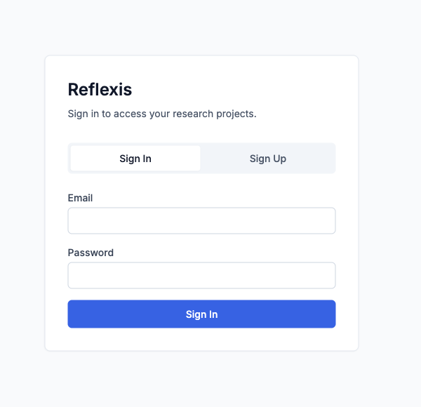
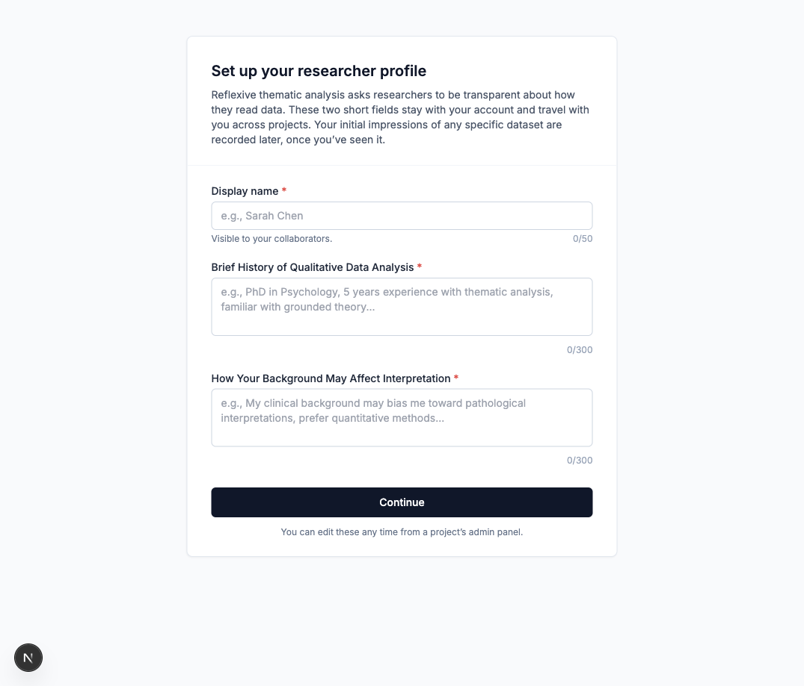
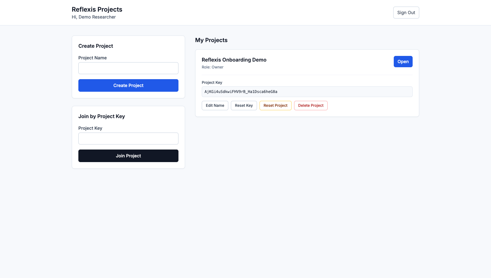
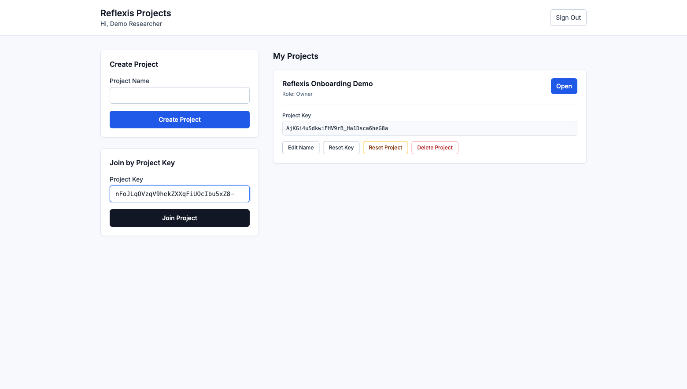
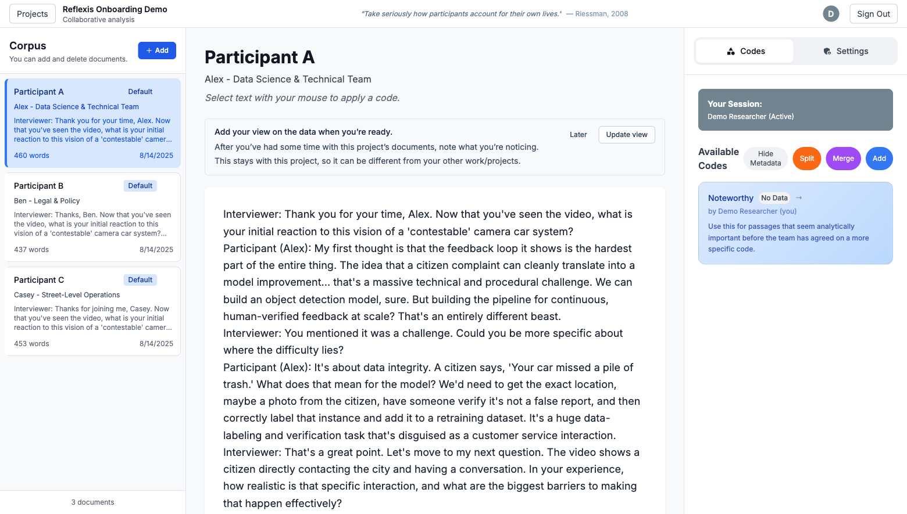
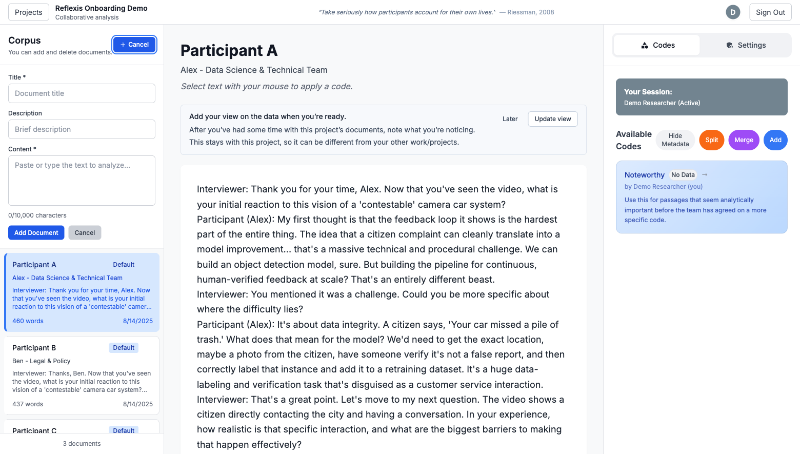
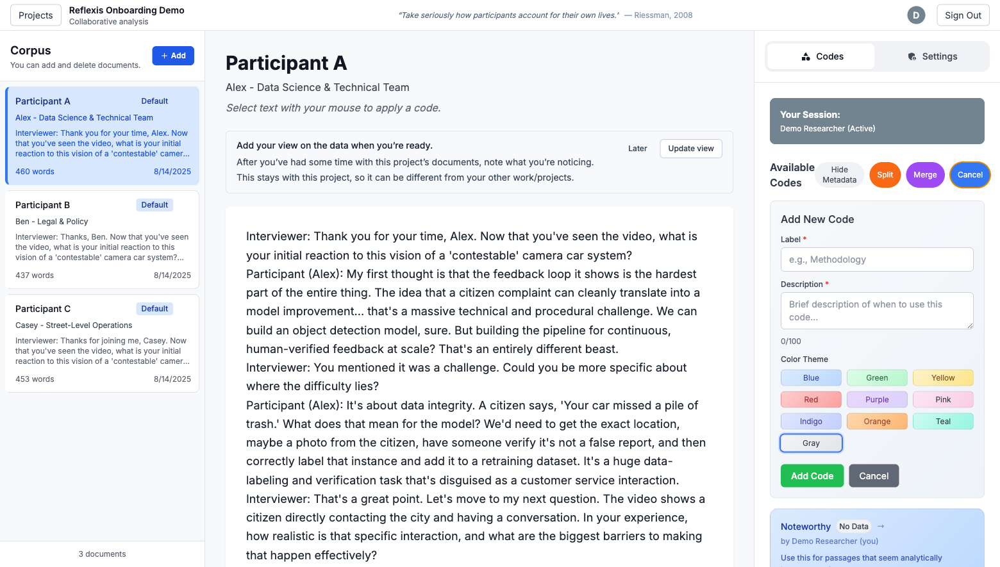
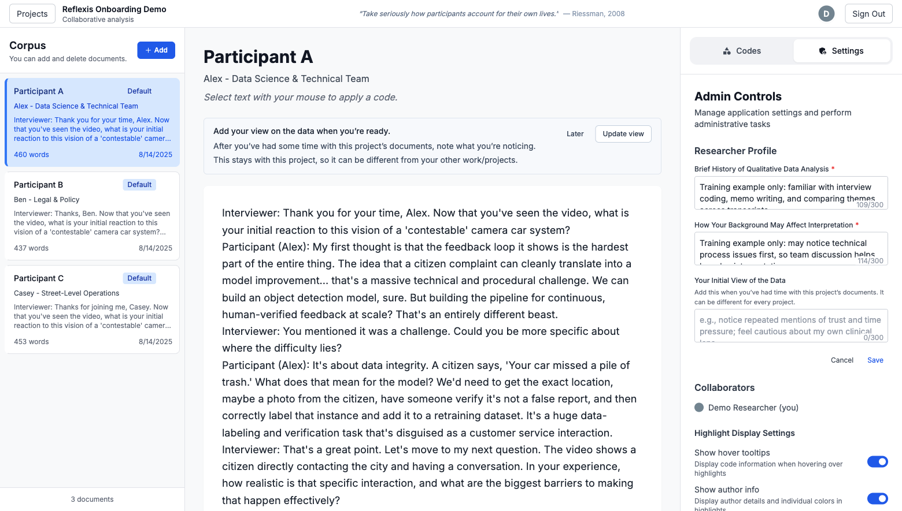

First-time user guide
How Reflexis turns interview text into collaborative qualitative analysis
Use this walkthrough to get from a fresh account to a working project:
sign up, complete your researcher profile, create or join a project,
add documents, apply codes, and use the Settings controls.
Before opening the app
Install dependencies, copy .env.example to .env.local, and add the Firebase values.
Run locally
Start the app with npm run dev, then open the local URL shown in the terminal.
Use test data safely
For demos, use a fake email, fake password, and clearly fake profile text.
Share the key
The project owner gives collaborators the project key. Collaborators paste it into the join box.
1
Sign up or sign in
New users choose Sign Up, enter an email and password,
then create the account. Returning users stay on Sign In.
- Use a real account for research work or a fake account for training.
- Password must meet the Firebase password length requirement.
- If sign-in fails, confirm email/password auth is enabled in Firebase.

2
Complete your researcher profile
The profile captures how each researcher approaches interpretation.
Collaborators can understand who is coding and what background each person brings.
- Add a display name that collaborators will recognize.
- Summarize your qualitative analysis experience.
- Note how your background may shape interpretation.

3
Create a project, then save the key
Project owners create a shared workspace. Reflexis creates starter documents and a default
Noteworthy code so a team can begin immediately.
- Type a project name and click Create Project.
- Copy the project key from the yellow box or the project card.
- Click Open to enter the analysis workspace.

4
Join someone else's project
A collaborator uses the same dashboard but pastes a shared key into
Join by Project Key. After joining, Reflexis opens that project.
- Ask the project owner for the project key.
- Paste it into the Project Key field on the dashboard.
- For this walkthrough, add another project with
nFoJLqOVzqV9hekZXXqFiUOcIbu5xZ8-.
- Click Join Project, then choose the project from My Projects.

5
Read documents and apply codes
The workspace has three main areas: corpus on the left, active text in the middle,
and analysis tools on the right.
- Select a document from Corpus.
- Use the on-screen reminder to add your view on the project corpus once you have read some documents.
- Drag over meaningful text in the center panel.
- Choose a code from Available Codes to annotate the selection.

6
Add your own documents
Use the corpus panel to paste transcripts, field notes, survey responses, or other text.
Owners can delete documents when there are no annotations attached.
- Click Add in the Corpus panel.
- Enter a title, optional description, and the text content.
- Click Add Document to place it in the shared project corpus.

7
Manage codes
The right sidebar opens on Codes. Codes can grow with the team as
patterns become clearer.
- Use Add, Split, and Merge to evolve the codebook.
- Click a code name to inspect the living codebook for that code.

8
Add your view on the project corpus
After you have spent time with the project documents, add your initial view of the data.
This is project-specific, so it can be different for each corpus you join.
- Use the reminder above the document text and click Update view.
- You can also open Settings, click Edit positionality, and fill Your Initial View of the Data.
- Save when you are ready. This helps collaborators understand how you first read the corpus.
- Use owner-only dashboard actions carefully: reset and delete actions remove project data.

If Firebase setup appears
Deploy the Firestore rules in firestore.rules, then refresh the app.
If AI helpers fail
Add OPENAI_API_KEY to the local environment for summary, prompt, and drift endpoints.
Careful with owner tools
Reset Project and Delete Project are destructive. Use them only for intentional cleanup.